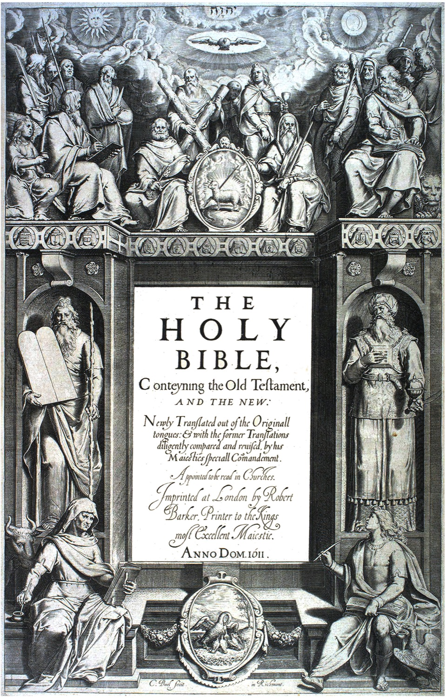
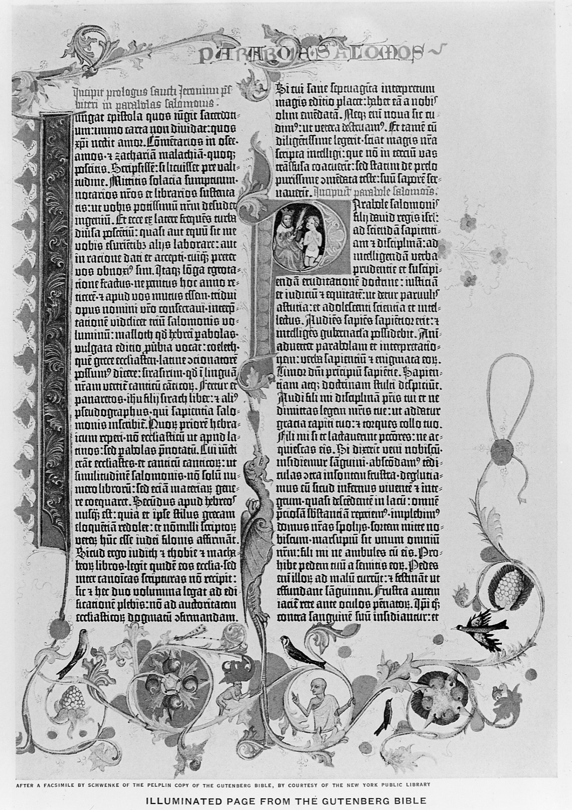
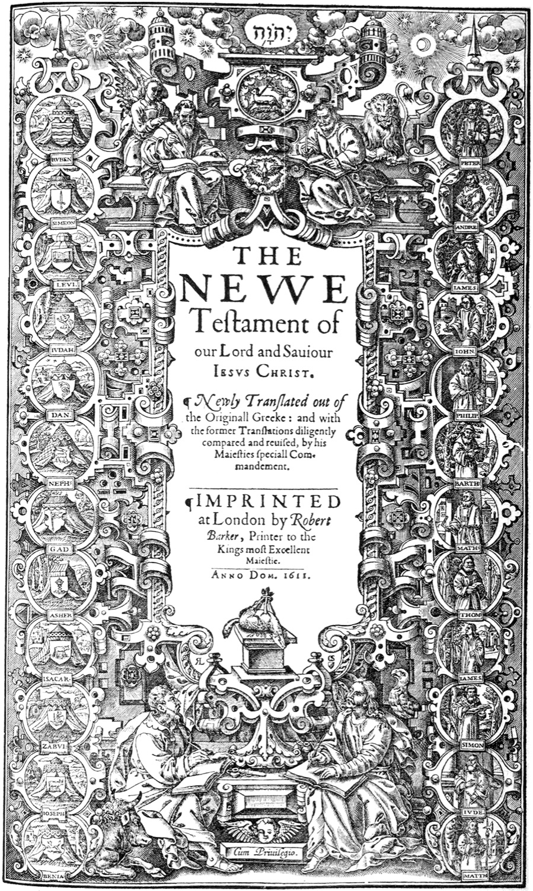

Made for study
Double-click a word to open its Hebrew or Greek entry. Cross-references, commentary, notes and bookmarks sit on every verse.
A free, open-source Bible app for Mac and Windows. Read and search in your own time, then put scripture and songs on the church screen when it counts.
Free and open source, GPLv3 licensed.
Psalm 23:1 · KJV
The LORD is my shepherd; I shall not want.
The LORD is my shepherd; I shall not want.
Output on Display 2
A working demo with 24 verses (KJV). Pick a result, then press Go Live. The app has the whole Bible.
A Bible app for the whole week. Read, search and study the original languages on Monday, then run scripture and songs on the church screen on Sunday. One free app, built for both.
Double-click a word to open its Hebrew or Greek entry. Cross-references, commentary, notes and bookmarks sit on every verse.
A Live Show console with a schedule, a preview and a live panel. Nothing reaches the audience until you send it.
One search bar, keyboard-first. Notes, bookmarks and history live in a database on your computer, and installed Bibles read without a connection.
Jump to any verse by typing it. Open the Strong's entry behind a word with a double-click, and switch between the Yarda lexicon, BDB and Abbott-Smith, Thayer and the full LSJ.
Type a reference to jump, a word to search the text, or a quoted phrase to match exactly. Put nt/ or john,romans/ in front to search only there. Start with a question mark and ask in plain words.
Build the order of service ahead of time. On the day, preview each verse, send it with one key, and cut to black or a standby screen the moment something goes wrong.
Eight accent colours and light or dark for the app. For the screen, the Customization Studio sets the font, size and spacing of what the congregation sees.



The same book, read for centuries. Yarda is a new way to open it.
Is Yarda really free? Yes. It is open source under the MIT licence. Ask Scripture, the plain-words search, uses a free account and has a daily limit.
Which computers does it run on? Macs with Apple silicon (M1 and later) and 64-bit Windows. Intel Macs and Linux are not built yet, and because the code is open you can build it yourself.
Which Bibles come with it? The King James Version installs on first launch, along with the Strong's Greek and Hebrew lexicons and the Treasury of Scripture Knowledge. More translations, commentaries and lexicons install from the Modules library.
Can I use it in a church service? That is what Presentation mode is for: a Live Show console, an output window for your projector, a schedule, songs, and black and standby screens.
How do I switch between Study and Presentation? Pick one when you first open the app, and change it any time in Settings under General.
What is Ask Scripture? Describe what you are looking for, such as verses about hope, and it suggests passages. Start the search bar with a question mark. It needs an internet connection and a free account.
Does it work offline? Installed Bibles live on your computer, so reading and searching do not need a connection. Installing modules, updates and Ask Scripture do.
Where are my notes kept? In a database on your own computer. Cloud sync is not available yet.
Does it update itself? Yes. Yarda checks for new releases and installs them when you agree.
Is there a tour? The first time you open Yarda it offers a hands-on tour of whichever mode you chose, and you can replay it from Settings.
Something is broken. Who do I tell? Open an issue on GitHub, or use Send feedback in Settings.
Free for Mac and Windows. Open the installer, then open Yarda. The King James Version installs on first launch.
Latest release on GitHub.